Competencies 97 to 99: airway map, nose and pharynx, larynx. Cadaver beside model. Fill in as we go.
A. Nose, pharynx, larynx: the start of the airway (cadaver)
B. Palate, tonsils and the three regions of the pharynx (model)
C. Larynx, anterior: cadaver beside model
D. Larynx, posterior (model)
Click or press the right arrow to move forward. Press ? for all the keys.
BIO 004 · Respiratory System, Part 1
A. Nose, pharynx, larynx: the start of the airway (cadaver)
Competency 97, 98
3TongueSkeletal muscle covered with mucosa. Extrinsic muscles move it, intrinsic muscles change its shape, and the hypoglossal nerve runs almost all of them.
5EpiglottisThe spoon-shaped elastic flap attached inside the thyroid cartilage. During a swallow the larynx rises and the epiglottis tips over the laryngeal inlet, so food slides past into the esophagus.
7Vocal folds (true vocal cords)The lower pair of folds. Each holds a vocal ligament from an arytenoid to the thyroid cartilage; pearly white, they vibrate as air passes to make sound.
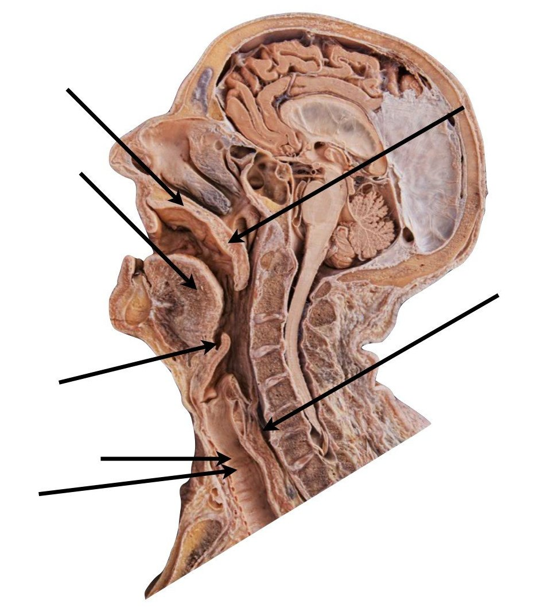
1234567
1Hard palateThe bony front of the roof of the mouth, formed by the palatine processes of the maxillae and the horizontal plates of the palatine bones. It separates the oral and nasal cavities.
2Soft palateThe muscular back of the roof of the mouth. It lifts with the uvula during a swallow to seal off the nasopharynx.
4EsophagusA collapsible muscular tube about 25 cm (10 inches) long, behind the trachea, through the mediastinum and the esophageal hiatus at T10 to the stomach. Lined with stratified squamous epithelium; adventitia, not serosa, above the diaphragm.
6Vestibular folds (false vocal folds)The upper pair of folds. They help close the airway during a swallow and play no part in sound.
Cadaver, midsagittal head and neck · 7 structures · click to reveal each one, click the box to reveal what the notes say
BIO 004 · Respiratory System, Part 1
A. Nose, pharynx, larynx: the start of the airway (cadaver) fill in
Competency 97, 98
Air only region:nasopharynx
Air and food:oropharynx, laryngopharynx
Lower tract begins at thelarynx
Fill in · click to reveal each line, click again for the answer · students write the answer on the note sheet
BIO 004 · Respiratory System, Part 1
B. Palate, tonsils and the three regions of the pharynx (model)
Competency 98, 113
1Hard palateThe bony front of the roof of the mouth, formed by the palatine processes of the maxillae and the horizontal plates of the palatine bones. It separates the oral and nasal cavities.
7EpiglottisThe spoon-shaped elastic flap attached inside the thyroid cartilage. During a swallow the larynx rises and the epiglottis tips over the laryngeal inlet, so food slides past into the esophagus.
8Vestibular folds (false vocal folds)The upper pair of folds. They help close the airway during a swallow and play no part in sound.
9Vocal folds (true vocal cords)The lower pair of folds. Each holds a vocal ligament from an arytenoid to the thyroid cartilage; pearly white, they vibrate as air passes to make sound.
10Thyroid cartilageThe largest laryngeal cartilage, a hyaline shield open at the back. Its front ridge is the laryngeal prominence.
12LarynxThe voice box, at C3 to C6, connecting the laryngopharynx to the trachea. Nine cartilages; it holds the airway open, keeps food out of it, and makes the voice.
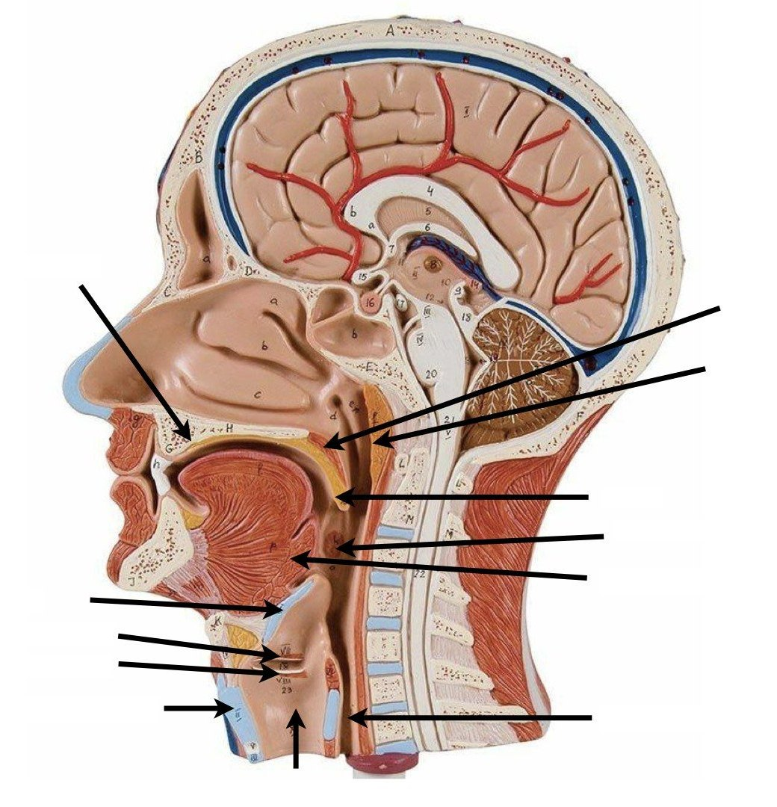
123456789101112
2Soft palateThe muscular back of the roof of the mouth. It lifts with the uvula during a swallow to seal off the nasopharynx.
3Pharyngeal tonsilSingle lymphatic mass on the back wall of the nasopharynx. Called the adenoids when enlarged.
4UvulaThe finger-shaped tag hanging from the back of the soft palate. It rises with the soft palate to seal the nasopharynx when you swallow.
5Palatine tonsilPaired lymphatic tissue in the side walls of the oropharynx between the palatoglossal and palatopharyngeal arches. These are the tonsils you see in an open mouth.
6Lingual tonsilLymphatic tissue on the back (root) of the tongue, in the oropharynx.
11EsophagusA collapsible muscular tube about 25 cm (10 inches) long, behind the trachea, through the mediastinum and the esophageal hiatus at T10 to the stomach. Lined with stratified squamous epithelium; adventitia, not serosa, above the diaphragm.
Model, midsagittal head: palate, tonsils, larynx · 12 structures · click to reveal each one, click the box to reveal what the notes say
BIO 004 · Respiratory System, Part 1
B. Palate, tonsils and the three regions of the pharynx (model) fill in
Competency 98, 113
Pathway of one breath, in order
1.nares
2.nasal cavity
3.choanae
4.nasopharynx
5.oropharynx
6.laryngopharynx
7.larynx (glottis)
8.trachea
Pathway of one breath, in order · click to reveal each line, click again for the answer · students write the answer on the note sheet
BIO 004 · Respiratory System, Part 1
C. Larynx, anterior: cadaver beside model photo 1 of 2
Competency 99
1Thyroid cartilageThe largest laryngeal cartilage, a hyaline shield open at the back. Its front ridge is the laryngeal prominence.
2Laryngeal prominenceThe Adam's apple, the front ridge of the thyroid cartilage. Larger in males after puberty.
5TracheaThe windpipe, 10 to 12 cm from the cricoid cartilage into the mediastinum, held open by 16 to 20 C-shaped rings with the open side toward the esophagus. Lined with respiratory epithelium.
6Thyroid glandSits across the front of the trachea just below the larynx, two lobes joined by an isthmus. An endocrine gland, not part of the airway.
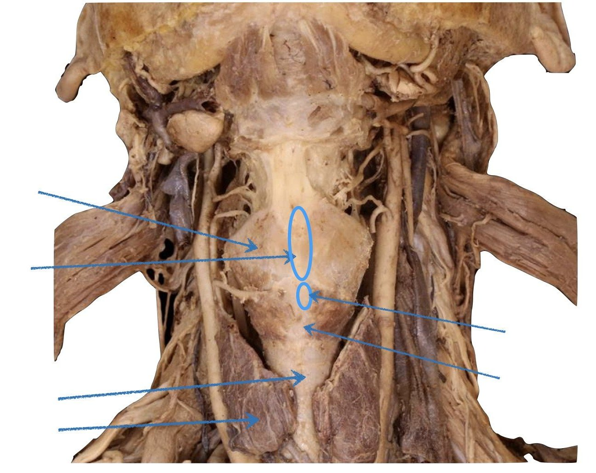
123456
3Cricothyroid membraneSpans the gap between the thyroid and cricoid cartilages in front, just under the skin. The landmark for an emergency airway when the larynx above is blocked.
4Cricoid cartilageThe signet-ring cartilage just below the thyroid cartilage, narrow in front and wide behind. The only complete ring of cartilage in the airway; the trachea hangs from its lower edge.
Cadaver, larynx and trachea, anterior · 6 structures · click to reveal each one, click the box to reveal what the notes say
BIO 004 · Respiratory System, Part 1
C. Larynx, anterior: cadaver beside model photo 2 of 2
Competency 99
2Thyroid cartilageThe largest laryngeal cartilage, a hyaline shield open at the back. Its front ridge is the laryngeal prominence.
5Cricoid cartilageThe signet-ring cartilage just below the thyroid cartilage, narrow in front and wide behind. The only complete ring of cartilage in the airway; the trachea hangs from its lower edge.
6TracheaThe windpipe, 10 to 12 cm from the cricoid cartilage into the mediastinum, held open by 16 to 20 C-shaped rings with the open side toward the esophagus. Lined with respiratory epithelium.
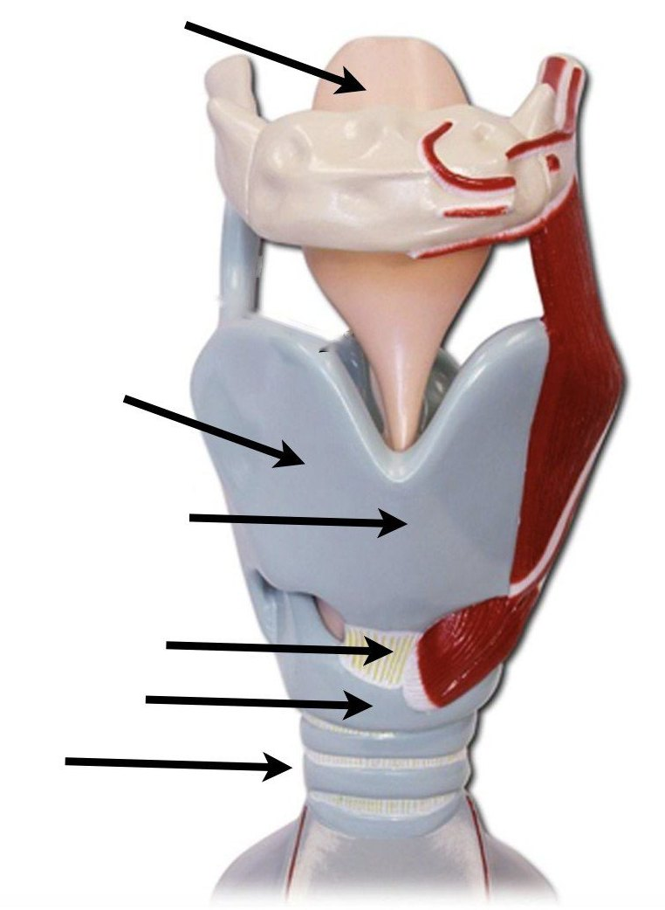
123456
1EpiglottisThe spoon-shaped elastic flap attached inside the thyroid cartilage. During a swallow the larynx rises and the epiglottis tips over the laryngeal inlet, so food slides past into the esophagus.
3Laryngeal prominenceThe Adam's apple, the front ridge of the thyroid cartilage. Larger in males after puberty.
4Cricothyroid membraneSpans the gap between the thyroid and cricoid cartilages in front, just under the skin. The landmark for an emergency airway when the larynx above is blocked.
Model, larynx, anterior · 6 structures · click to reveal each one, click the box to reveal what the notes say
BIO 004 · Respiratory System, Part 1
C. Larynx, anterior: cadaver beside model fill in
Competency 99
Largest cartilage, the shield:thyroid
Its front ridge:laryngeal prominence
Only complete ring:cricoid
Emergency airway landmark:cricothyroid ligament
Single:thyroid, cricoid, epiglottis
Paired:arytenoid, corniculate, cuneiform
Fill in · click to reveal each line, click again for the answer · students write the answer on the note sheet
BIO 004 · Respiratory System, Part 1
D. Larynx, posterior (model)
Competency 99
2Corniculate cartilageSmall paired elastic cartilages sitting on top of the arytenoids.
3Arytenoid cartilagePaired, sitting on the back of the cricoid. They anchor the vocal folds and pivot to open and close the glottis, which makes them the most important paired cartilages.
5Cricoid cartilageThe signet-ring cartilage just below the thyroid cartilage, narrow in front and wide behind. The only complete ring of cartilage in the airway; the trachea hangs from its lower edge.
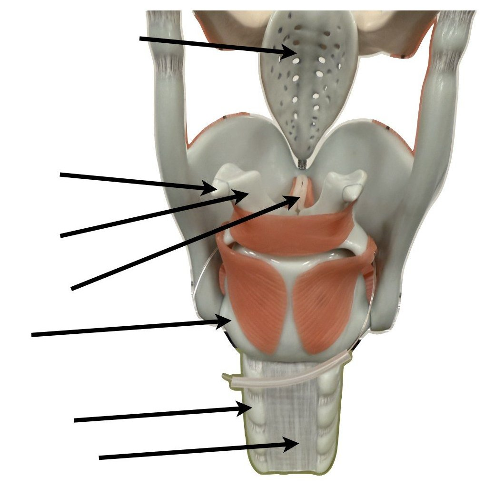
1234567
1EpiglottisThe spoon-shaped elastic flap attached inside the thyroid cartilage. During a swallow the larynx rises and the epiglottis tips over the laryngeal inlet, so food slides past into the esophagus.
4Vocal foldsThe true vocal cords, the lower pair. Each holds a vocal ligament from the arytenoid to the thyroid cartilage; they look pearly white and vibrate to make sound.
6Tracheal cartilages (C-rings)Sixteen to twenty C-shaped rings of hyaline cartilage. The gap at the back faces the esophagus and is closed by the trachealis muscle.
7Trachealis muscleSmooth muscle bridging the open back of each C ring. It lets the esophagus bulge forward during a swallow and narrows the trachea during a cough.
Model, larynx, posterior · 7 structures · click to reveal each one, click the box to reveal what the notes say
BIO 004 · Respiratory System, Part 1
D. Larynx, posterior (model) fill in
Competency 99
Elastic cartilage, not hyaline:epiglottis
Folds that make sound:vocal folds (true cords)
Folds that do not:vestibular folds (false cords)
Glottis =vocal folds plus the opening
Cartilage that pivots the folds:arytenoid
Open side of the C rings facesback, toward the esophagus
Fill in · click to reveal each line, click again for the answer · students write the answer on the note sheet
BIO 004 Human Anatomy · Module 4 · Lecture
Respiratory System, Part 2
Competencies 100 and 101: trachea, bronchial tree, lungs and pleurae. Cadaver beside model. Fill in as we go.
A. Trachea, carina and main bronchi (cadaver)
B. The bronchial tree, trunk to twigs (model)
C. Lobes and fissures (cadaver)
D. Hilum and pleurae (cadaver, and the two-layer rule)
Click or press the right arrow to move forward. Press ? for all the keys.
BIO 004 · Respiratory System, Part 2
A. Trachea, carina and main bronchi (cadaver)
Competency 100, 103
4Phrenic nerveFrom C3, C4, and C5. Runs down the side of the pericardium in front of the root of the lung to supply the diaphragm. C3, 4, and 5 keep the diaphragm alive.
6TracheaThe windpipe, 10 to 12 cm from the cricoid cartilage into the mediastinum, held open by 16 to 20 C-shaped rings with the open side toward the esophagus. Lined with respiratory epithelium.
8Right primary bronchusWider, shorter, and more vertical than the left, so an inhaled object usually lands in the right lung.
9CarinaThe internal ridge formed by the lowest tracheal cartilage where the trachea forks, at about the sternal angle (T4 to T5). Touching it sets off a strong cough.
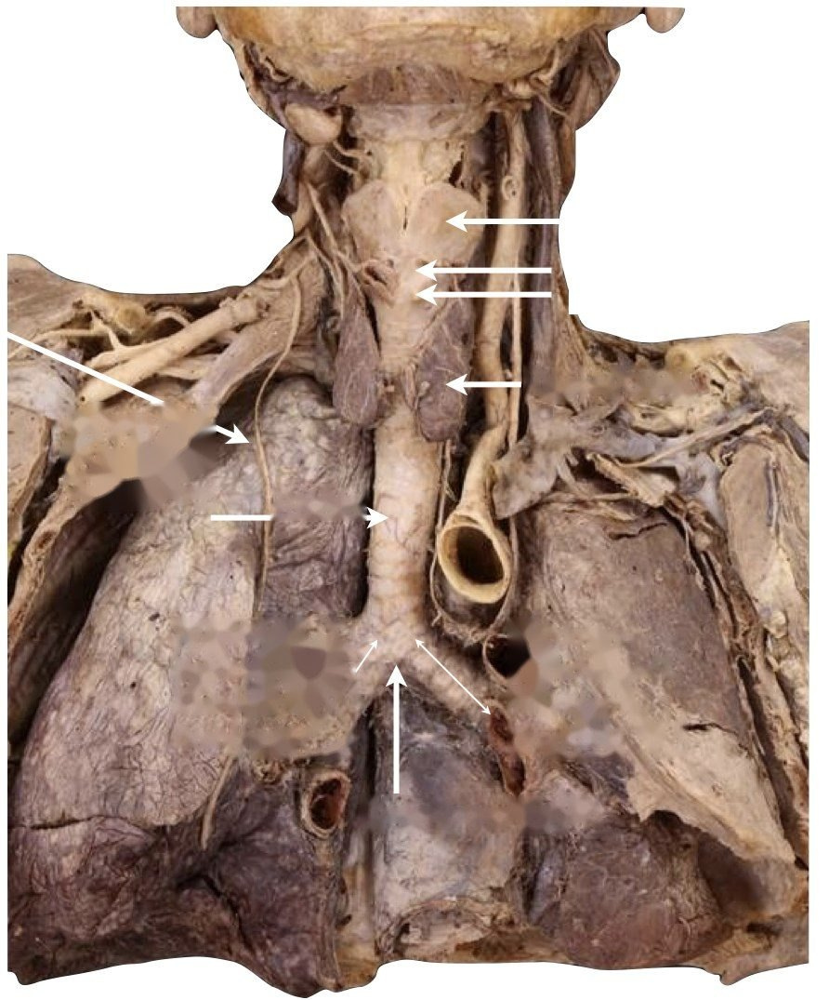
123456789
1Thyroid cartilageThe largest laryngeal cartilage, a hyaline shield open at the back. Its front ridge is the laryngeal prominence.
2Cricothyroid membraneSpans the gap between the thyroid and cricoid cartilages in front, just under the skin. The landmark for an emergency airway when the larynx above is blocked.
3Cricoid cartilageThe signet-ring cartilage just below the thyroid cartilage, narrow in front and wide behind. The only complete ring of cartilage in the airway; the trachea hangs from its lower edge.
5Thyroid glandSits across the front of the trachea just below the larynx, two lobes joined by an isthmus. An endocrine gland, not part of the airway.
7Left primary bronchusNarrower, longer, and more horizontal than the right, because it angles around the heart. Enters the left lung at the hilum.
Cadaver, neck and thorax, anterior · 9 structures · click to reveal each one, click the box to reveal what the notes say
BIO 004 · Respiratory System, Part 2
A. Trachea, carina and main bronchi (cadaver) fill in
Competency 100, 103
Carina sits atthe sternal angle, T4 to T5
Right main bronchus iswider, shorter, more vertical
so an inhaled object landsin the right lung
Nerve to the diaphragm:phrenic, C3 to C5
Fill in · click to reveal each line, click again for the answer · students write the answer on the note sheet
BIO 004 · Respiratory System, Part 2
B. The bronchial tree, trunk to twigs (model)
Competency 100
3Laryngeal prominenceThe Adam's apple, the front ridge of the thyroid cartilage. Larger in males after puberty.
4Cricothyroid ligamentFills the gap between the thyroid and cricoid cartilages in front. It lies just under the skin below the vocal folds with no cartilage over it, which makes it the landmark for an emergency airway.
5Cricoid cartilageThe signet-ring cartilage just below the thyroid cartilage, narrow in front and wide behind. The only complete ring of cartilage in the airway; the trachea hangs from its lower edge.
6TracheaThe windpipe, 10 to 12 cm from the cricoid cartilage into the mediastinum, held open by 16 to 20 C-shaped rings with the open side toward the esophagus. Lined with respiratory epithelium.
8Right primary bronchusWider, shorter, and more vertical than the left, so an inhaled object usually lands in the right lung.
9CarinaThe internal ridge formed by the lowest tracheal cartilage where the trachea forks, at about the sternal angle (T4 to T5). Touching it sets off a strong cough.
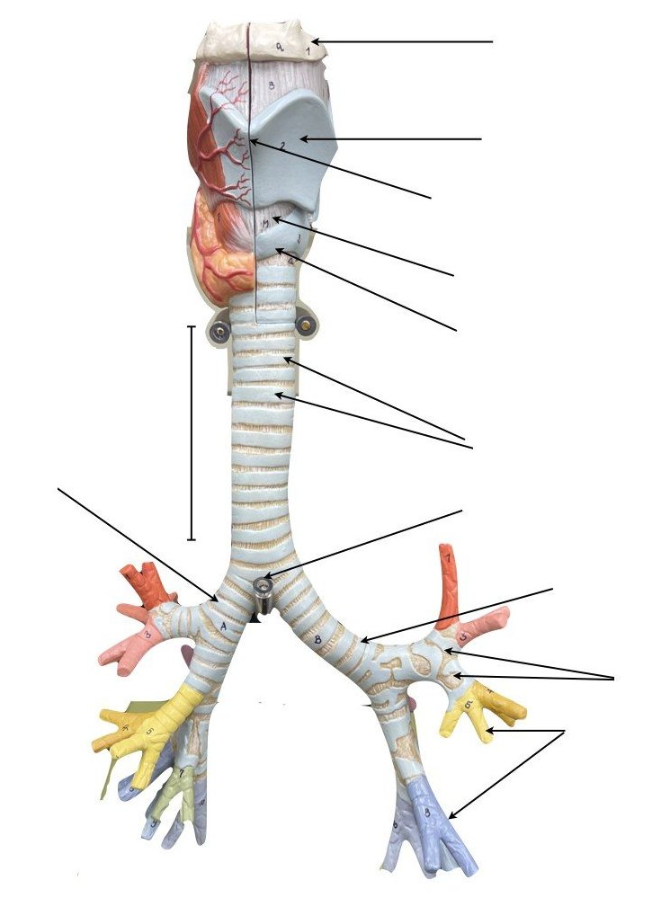
123456789101112
1Hyoid boneThe U-shaped bone above the larynx that the larynx hangs from. Not part of the larynx itself.
2Thyroid cartilageThe largest laryngeal cartilage, a hyaline shield open at the back. Its front ridge is the laryngeal prominence.
7Tracheal cartilages (C-rings)Sixteen to twenty C-shaped rings of hyaline cartilage. The gap at the back faces the esophagus and is closed by the trachealis muscle.
10Left primary bronchusNarrower, longer, and more horizontal than the right, because it angles around the heart. Enters the left lung at the hilum.
11Secondary (lobar) bronchiOne to each lobe: three on the right, two on the left.
12Tertiary (segmental) bronchiOne to each bronchopulmonary segment: ten on the right, eight to ten on the left.
Model, larynx, trachea and bronchial tree · 12 structures · click to reveal each one, click the box to reveal what the notes say
BIO 004 · Respiratory System, Part 2
B. The bronchial tree, trunk to twigs (model) fill in
Competency 100
Down the tree, in order
1.trachea
2.main (primary) bronchi
3.lobar (secondary) bronchi
4.segmental (tertiary) bronchi
5.bronchioles
6.terminal bronchioles
Fill in
Cartilage: rings, thenplates, then none
Smooth muscleincreases
Down the tree, in order · Fill in · click to reveal each line, click again for the answer · students write the answer on the note sheet
BIO 004 · Respiratory System, Part 2
C. Lobes and fissures (cadaver)
Competency 101
2ApexThe narrow top of the lung. It rises just above the clavicle into the root of the neck.
6Oblique fissurePresent on both lungs. It separates the inferior lobe from the lobe or lobes above it.
7Horizontal fissureFound only on the right lung. It separates the superior lobe from the middle lobe.
8Inferior lobeThe lowest lobe of each lung, cut off by the oblique fissure.
9Middle lobeFound only on the right lung, between the horizontal and oblique fissures. The left lung gave up this lobe to make room for the heart.
10BaseThe broad, curved bottom of the lung that rests on the diaphragm.
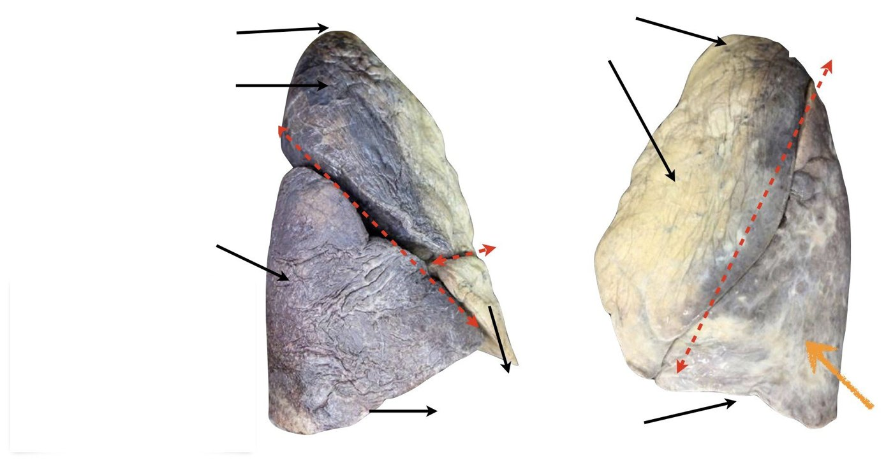
123456789101112
1ApexThe narrow top of the lung. It rises just above the clavicle into the root of the neck.
3Oblique fissurePresent on both lungs. It separates the inferior lobe from the lobe or lobes above it.
4Superior lobeThe top lobe of each lung. On the left it carries the cardiac notch and the lingula.
5Superior lobeThe top lobe of each lung. On the left it carries the cardiac notch and the lingula.
11BaseThe broad, curved bottom of the lung that rests on the diaphragm.
12Inferior lobeThe lowest lobe of each lung, cut off by the oblique fissure.
Cadaver, right and left lungs, anterior · 12 structures · click to reveal each one, click the box to reveal what the notes say
BIO 004 · Respiratory System, Part 2
C. Lobes and fissures (cadaver) fill in
Competency 101
Right lung lobes:superior, middle, inferior
Right fissures:horizontal and oblique
Left lung lobes:superior, inferior
Left fissure:oblique only
Left lung only:cardiac notch, lingula
Fill in · click to reveal each line, click again for the answer · students write the answer on the note sheet
BIO 004 · Respiratory System, Part 2
D. Hilum and pleurae (cadaver, and the two-layer rule) photo 1 of 2
Competency 101
1HilumThe indented area on the medial surface of the lung where the bronchus, pulmonary vessels, nerves, and lymphatics enter and leave as the root of the lung.
3Pulmonary arteriesAt the hilum, carry oxygen-poor blood from the right ventricle into the lung. In the left hilum the artery is the highest structure.
5Diaphragmatic surfaceThe base of the lung, resting on the dome of the diaphragm.
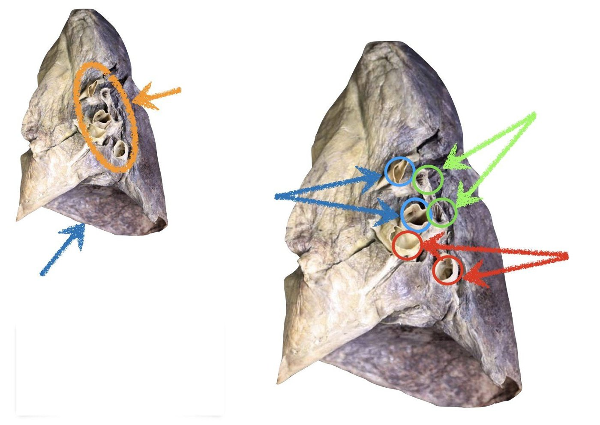
12345
2BronchiAt the hilum, the main bronchus enters the lung. On the right the bronchus sits at or above the artery; on the left the artery is highest.
4Pulmonary veinsCarry oxygen-rich blood from the lung back to the left atrium. In both hila they are the lowest structures.
Cadaver, right lung, medial view · 5 structures · click to reveal each one, click the box to reveal what the notes say
BIO 004 · Respiratory System, Part 2
D. Hilum and pleurae (cadaver, and the two-layer rule) photo 2 of 2
Competency 101
1Parietal layerThe layer of a serous membrane that lines the wall of the cavity.
2Visceral layerThe layer of a serous membrane that covers the organ itself.
3Serous cavity (fluid-filled)The thin space between the parietal and visceral layers, holding only a film of serous fluid so the organ can glide.
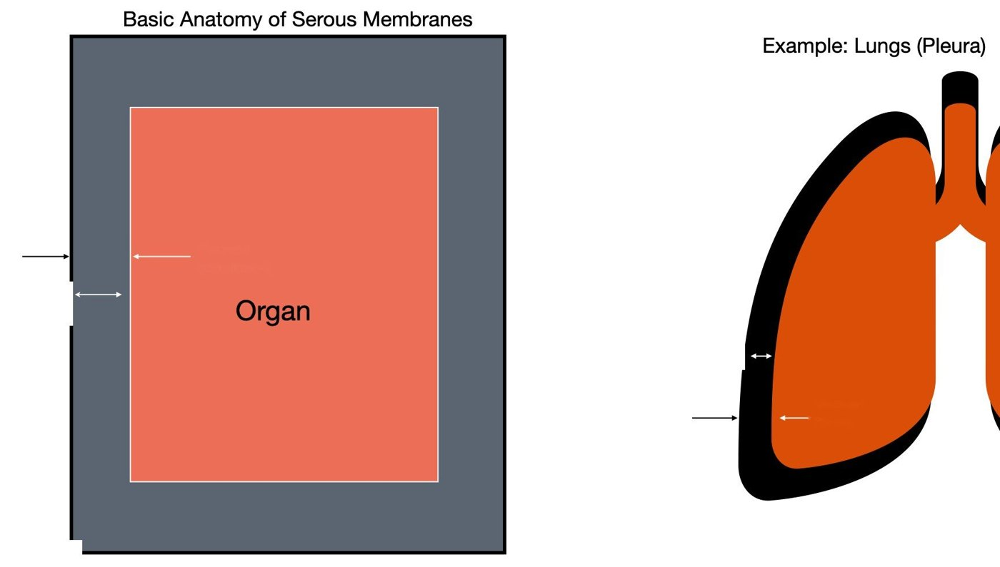
123456
4Pleural cavityThe thin space between the parietal and visceral pleurae holding only a film of fluid. One on each side, so air in one does not collapse the other lung.
6Visceral pleuraClings to the surface of the lung and dips into its fissures. Continuous with the parietal pleura at the hilum.
5Parietal pleuraLines the inside of the thoracic wall, the top of the diaphragm, and the sides of the mediastinum. Continuous with the visceral pleura at the hilum.
Serous membrane: parietal layer, visceral layer, cavity between · 6 structures · click to reveal each one, click the box to reveal what the notes say
BIO 004 · Respiratory System, Part 2
D. Hilum and pleurae (cadaver, and the two-layer rule) fill in
Competency 101
Root passes through thehilum
Pulmonary arteries carryoxygen-poor blood in
Pulmonary veins carryoxygen-rich blood out
Parietal pleura linesthe chest wall
Visceral pleura coversthe lung
Pleural cavity holdsa film of fluid
Lowest pocket:costodiaphragmatic recess
Fill in · click to reveal each line, click again for the answer · students write the answer on the note sheet
BIO 004 Human Anatomy · Module 4 · Lecture
Respiratory System, Part 3
Competencies 102 to 104, with 97, 100 and 103: respiratory zone, histology, thoracic wall and diaphragm, disorders.
A. Respiratory zone and the alveolus (model)
B. Histology: trachea and respiratory epithelium
C. Thoracic wall and diaphragm: the three openings
D. Disorders: which structure does each one affect?
Click or press the right arrow to move forward. Press ? for all the keys.
BIO 004 · Respiratory System, Part 3
A. Respiratory zone and the alveolus (model)
Competency 97, 102
1Branches of pulmonary veinCarry oxygen-rich blood from the alveolar capillaries back toward the left atrium.
2BronchiolesAirways under 1 mm with smooth muscle and no cartilage. With nothing to hold them open, they narrow sharply when the muscle contracts, which is the story of asthma.
3Branches of pulmonary arteryCarry oxygen-poor blood from the right ventricle into the lung, out to the capillaries around the alveoli.
4Pulmonary arteriolesThe smallest branches of the pulmonary artery, feeding the capillary net around the alveoli.
5Pulmonary venulesThe smallest tributaries of the pulmonary veins, draining the alveolar capillaries.
6Capillaries surrounding alveoliA dense net wrapped around each alveolus, fed by the pulmonary arteries and drained by the pulmonary veins. Where they touch the alveolus the respiratory membrane is only three layers thick.
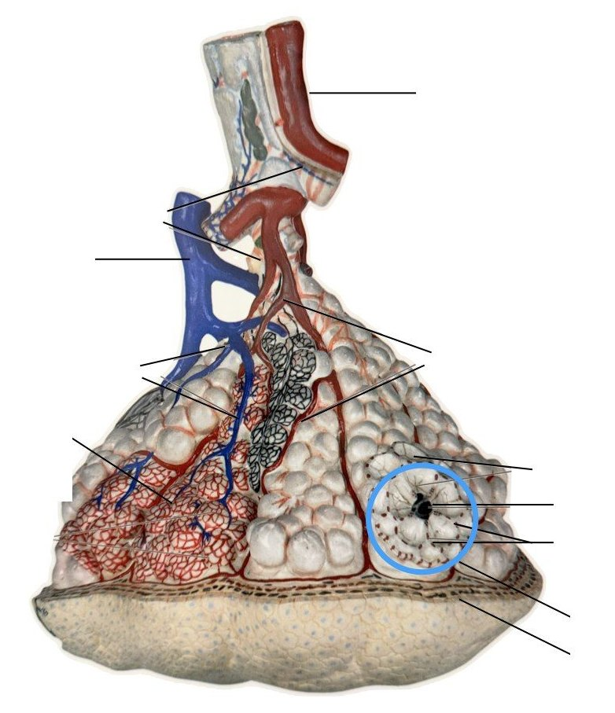
1234567891011
7AlveolusThe single air sac where gas crosses into the blood. Its wall is mostly thin type I cells, with type II cells making surfactant and macrophages on patrol.
8Opening of the alveolar ductWhere an alveolar duct opens into a cluster of alveoli, the alveolar sac.
9Pulmonary capillariesWrap each alveolus. Where they press on the alveolar wall, air and blood are separated by the three-layer respiratory membrane.
10Alveolar ductA passage whose walls are lined entirely with alveoli. Part of the respiratory zone, after the respiratory bronchiole.
11Visceral pleuraClings to the surface of the lung and dips into its fissures. Continuous with the parietal pleura at the hilum.
Model, lung lobule · 11 structures · click to reveal each one, click the box to reveal what the notes say
BIO 004 · Respiratory System, Part 3
A. Respiratory zone and the alveolus (model) fill in
Competency 97, 102
Conducting zone ends at theterminal bronchiole
Respiratory zone begins at therespiratory bronchiole
Type I cell:thin and flat, gas crosses
Type II cell:cuboidal, makes surfactant
Macrophage (dust cell):cleans up
Membrane, air to blood:type I cell, fused basement membranes, endothelium
Fill in · click to reveal each line, click again for the answer · students write the answer on the note sheet
BIO 004 · Respiratory System, Part 3
B. Histology: trachea and respiratory epithelium photo 1 of 2
Competency 100, 102
1TracheaThe windpipe, 10 to 12 cm from the cricoid cartilage into the mediastinum, held open by 16 to 20 C-shaped rings with the open side toward the esophagus. Lined with respiratory epithelium.
4Tracheal cartilage (hyaline cartilage)One of the C-shaped hyaline rings that keep the trachea from collapsing. The open side faces back, bridged by the trachealis muscle.
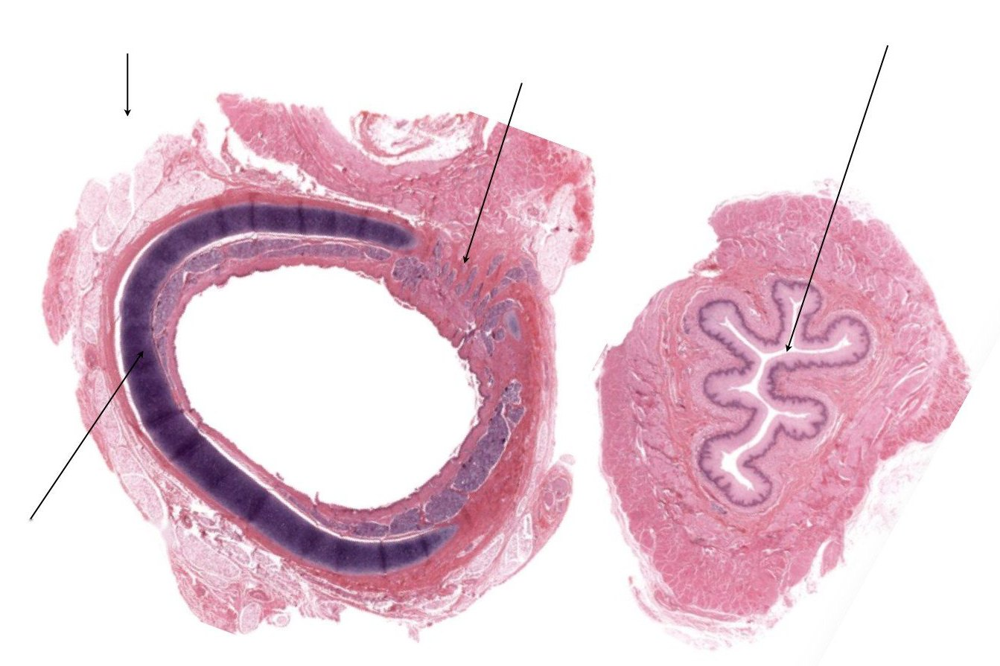
1234
2EsophagusA collapsible muscular tube about 25 cm (10 inches) long, behind the trachea, through the mediastinum and the esophageal hiatus at T10 to the stomach. Lined with stratified squamous epithelium; adventitia, not serosa, above the diaphragm.
3Trachealis muscleSmooth muscle bridging the open back of each C ring. It lets the esophagus bulge forward during a swallow and narrows the trachea during a cough.
Slide, trachea and esophagus, cross section · 4 structures · click to reveal each one, click the box to reveal what the notes say
BIO 004 · Respiratory System, Part 3
B. Histology: trachea and respiratory epithelium photo 2 of 2
Competency 100, 102
2CiliaHairlike projections on the respiratory epithelium that sweep mucus, with its trapped dust and microbes, up toward the pharynx to be swallowed.
3Goblet cellA mucus-secreting cell scattered in the respiratory epithelium. Its mucus traps dust and microbes for the cilia to sweep away.
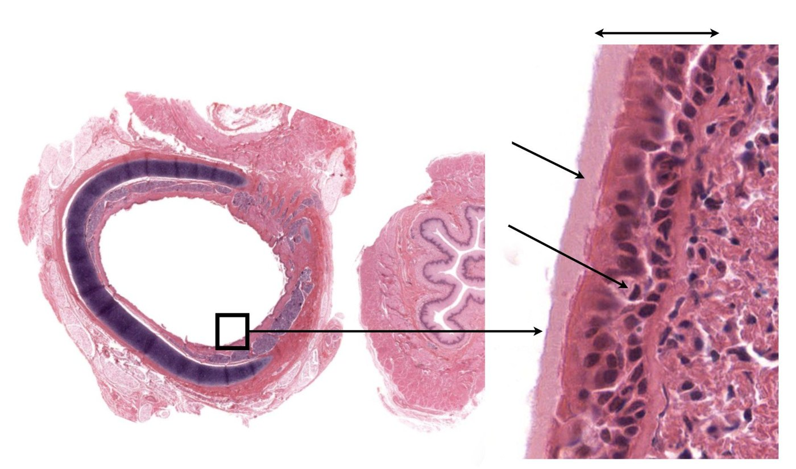
123
1Pseudostratified ciliated columnar epitheliumThe respiratory epithelium: tall cells with cilia and goblet cells. It lines the nasal cavity, trachea, and bronchi and moves mucus toward the pharynx.
Slide, respiratory epithelium · 3 structures · click to reveal each one, click the box to reveal what the notes say
BIO 004 · Respiratory System, Part 3
B. Histology: trachea and respiratory epithelium fill in
Fill in · click to reveal each line, click again for the answer · students write the answer on the note sheet
BIO 004 · Respiratory System, Part 3
C. Thoracic wall and diaphragm: the three openings photo 1 of 2
Competency 103
3Inferior vena cavaForms at L5 from the two common iliac veins, runs up the right side of the aorta, passes through the central tendon of the diaphragm at T8, and empties into the right atrium.
4DiaphragmThe dome-shaped sheet of skeletal muscle that floors the thorax. It contracts, flattens, and drops to make the thoracic cavity taller; the main muscle of breathing, supplied by the phrenic nerves (C3 to C5).
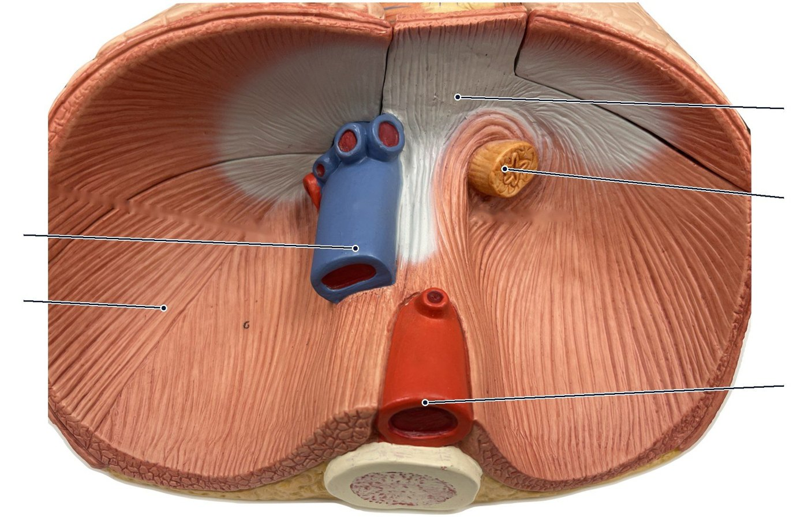
12345
1Central tendonThe flat sheet of tendon at the top of the diaphragm's dome that all its muscle fibers pull toward. The inferior vena cava passes through it at T8.
2EsophagusA collapsible muscular tube about 25 cm (10 inches) long, behind the trachea, through the mediastinum and the esophageal hiatus at T10 to the stomach. Lined with stratified squamous epithelium; adventitia, not serosa, above the diaphragm.
5AortaPasses through the aortic hiatus at T12, behind the diaphragm between the crura, with the thoracic duct. Above it is the thoracic aorta, below it the abdominal aorta.
Model, diaphragm from above · 5 structures · click to reveal each one, click the box to reveal what the notes say
BIO 004 · Respiratory System, Part 3
C. Thoracic wall and diaphragm: the three openings photo 2 of 2
Competency 103
1Innermost intercostalsThe deepest intercostal layer, inside the internal intercostals, with the intercostal vessels and nerve running between the two.
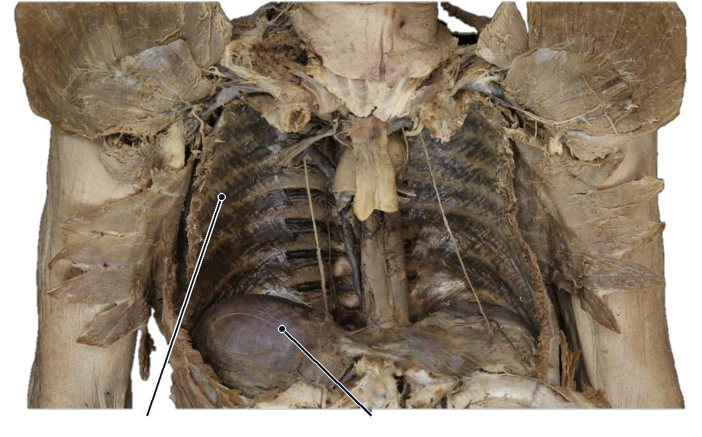
12
2DiaphragmThe dome-shaped sheet of skeletal muscle that floors the thorax. It contracts, flattens, and drops to make the thoracic cavity taller; the main muscle of breathing, supplied by the phrenic nerves (C3 to C5).
Cadaver, thorax opened: the diaphragm below the lungs · 2 structures · click to reveal each one, click the box to reveal what the notes say
BIO 004 · Respiratory System, Part 3
C. Thoracic wall and diaphragm: the three openings fill in
Competency 103
Through the diaphragm, top to bottom
T8:inferior vena cava, caval opening
T10:esophagus, esophageal hiatus, with the vagus nerves
T12:aorta, aortic hiatus, with the thoracic duct
Fill in
Main muscle of breathing:diaphragm
Its nerve and levels:phrenic nerve, C3, C4, C5
External intercostal fibers rundown and forward
Internal intercostals work inforced expiration
Through the diaphragm, top to bottom · Fill in · click to reveal each line, click again for the answer · students write the answer on the note sheet
BIO 004 · Respiratory System, Part 3
D. Disorders: which structure does each one affect? fill in
Competency 104
Disorder: structure, what changes
Asthma:bronchi and bronchioles narrow, no cartilage to hold them open
Emphysema:alveolar walls destroyed, permanent
Pneumonia:alveoli fill with fluid
Pneumothorax:air in the pleural cavity, lung collapses
Pleural effusion:fluid in the pleural cavity
COPD:emphysema plus chronic bronchitis
Infant RDS:type II cells, not enough surfactant
Lung cancer:lung tissue, tumor from airway epithelium
Disorder: structure, what changes · click to reveal each line, click again for the answer · students write the answer on the note sheet
Dr. Sharilyn Rennie · BIO 004 Human Anatomy · Solano Community College · Photos: BIO 004 Digital Atlas
Keys → space Enter: next reveal or slide ← Backspace: undo last reveal, or back a slide N: skip to next slide A: reveal everything on this slide R: reset this slide Home / End: first / last slide ?: this help
Click any box or card to reveal what the notes say. Mode button: "students fill in" hides the facts until you click; "show facts" shows them as each structure appears.